Fudai
Fudai · Iwate
Fudai
Highlighted on the Iwate map.
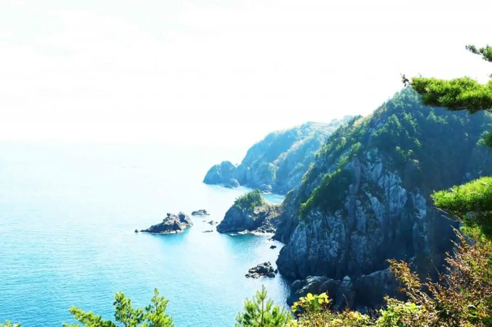
Stay
国民宿舎くろさき荘
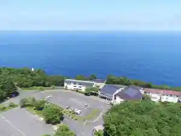
Kokuminshukusha Kurosaki Sou
Guesthouse (minshuku) in Fudai, Iwate.
Dining
レストハウスうしお
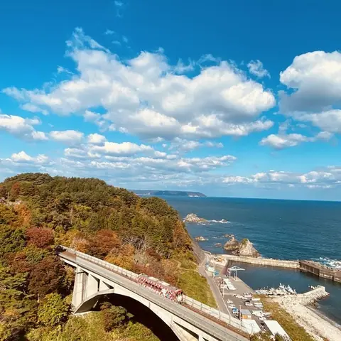
Resutohausu Ushio
Seafood restaurant in Fudai, Iwate.
道の駅 青の国ふだい
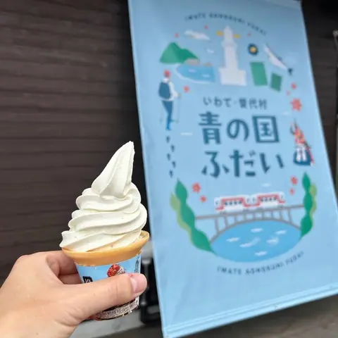
Michi No Eki Ao No Kuni Fudai
Roadside-station eatery in Fudai, Iwate.
みつよし食堂
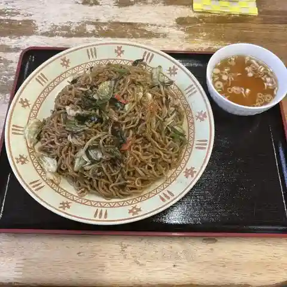
Mitsuyoshi Shokudou
Shokudo diner in Fudai, Iwate.
くろさき荘
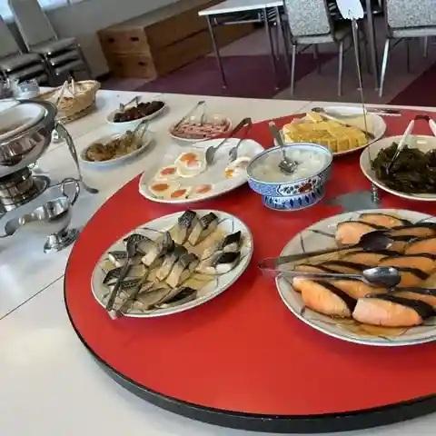
Kurosaki Sou
Inn restaurant in Fudai, Iwate.
魚定
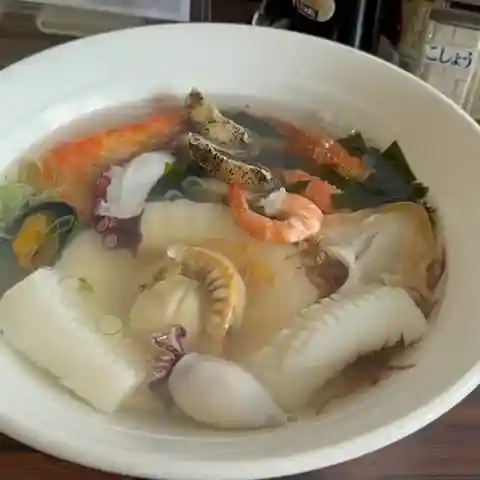
Sakana Tei
Shokudo diner in Fudai, Iwate.
三船製菓
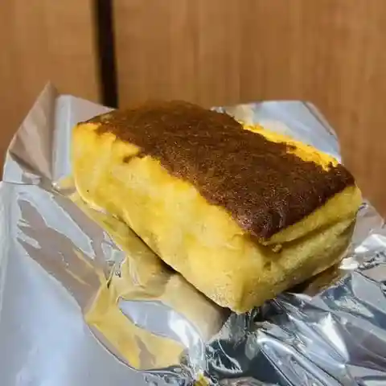
Mifune Seika
Japanese sweets shop in Fudai, Iwate.
いち龍
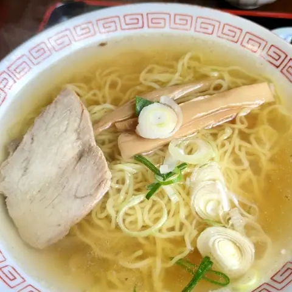
Ichi Ryuu
Ramen shop in Fudai, Iwate.
ピーターズ・カフェ
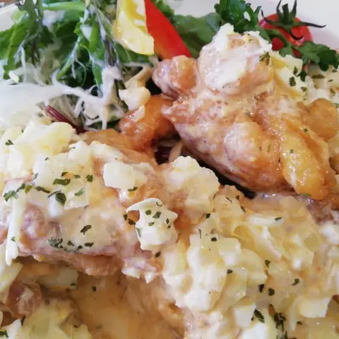
Piitaazu Kafe
Coffee shop in Fudai, Iwate.
TOFokU食堂
Tofoku Shokudou
Shokudo diner in Fudai, Iwate.
こしど 普代店
Koshido Fudai Mise
Local-cuisine restaurant in Fudai, Iwate.
中村商店
Nakamura Shouten
Local-cuisine restaurant in Fudai, Iwate.
上神田精肉店
Kamikanda Seinikuten
Deli in Fudai, Iwate.
Sights
Nedari Beach
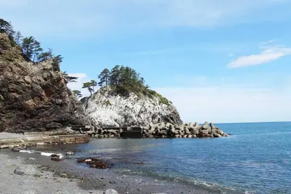
Nedari Beach (Benten Fishing Port) is a beach located below the Kurosaki Observation Deck.
Kiraumi Seaside Direct-Sales Shop
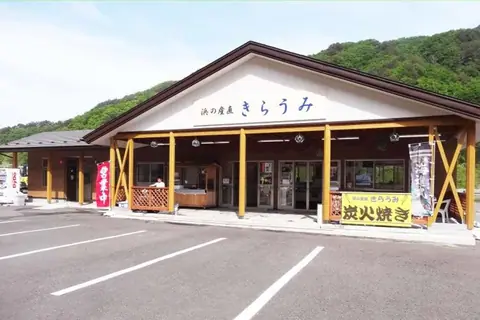
This is a direct-from-seafood facility located near Fudaihama in Fudaihamaenchi Kiraumi.
Mifune’s Ice Candy
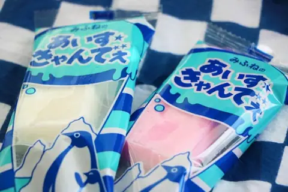
It has been 50 years since they started making ice cream when Fudai Village had a stable supply of electricity.
Roadside Station Ao no Kuni Fudai
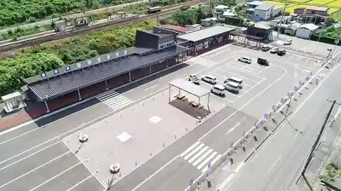
"Roadside Station Aonokuni Fudai" is the 35th in Iwate Prefecture.
Ochiai Farm-Direct Market
It is located along National Route 45 near Tanohata Village and is only open on Sundays.
Suki Konbu (Sheet Kelp)
Suki konbu is made by drying kelp that has been cut into 2-3 mm pieces and made into sheets.
Rikuchukurosaki Lighthouse
This concrete lighthouse stands on a cliff at an altitude of 130m in Kurosaki, which juts out into the Pacific Ocean, and has been selected as one of Japan's top 50 lighthouses.
Fudai Village Kelp Products
Fudai Village has developed a variety of innovative products using thick, flavorful kelp harvested off the coast of Sanriku.
Fudaihama Kiraumi Beach
600m north to south. The perfect location with its arch-shaped white sandy beach and sparkling sea.
Fudai Antenna Shop Aide
This is a souvenir shop located within the premises of Sanriku Railway Fudai Station.
Fudai Sluice Gate
It is a water gate with a height of 15.5m and a total length of 205m that reaches the mouth of the Fudai River.
Kenji Miyazawa Poetry Monument (Kurosaki Observation Deck)
Kenji Miyazawa Poetry Monument (Kurosaki Observation Deck)
Kenji Miyazawa Poetry Monument (Matsuiso Park)
Kenji Miyazawa Poetry Monument (Matsuiso Park)
Kurosaki Observatory
It is a scenic spot that represents Fudai. From the observation deck on top of the Kurosaki cliff,
Kurosaki Auto Campsite & Kurosaki Campsite
A popular auto campsite and free campsite located in Kurosaki, one of the highlights of Sanriku Fukko National Park.
Shirai Kaigan Station
Sanriku Railway's unexplored station, also known as the best in Tohoku.
Osawa Bridge
This is the spot where the Sanriku Railway crosses the railway bridge with the Pacific Ocean in the background.
Anmoura Waterfall
With a drop of over 100m, it is said to be the highest waterfall in Iwate Prefecture.
Utori Kagura
It is a type of Yamabushi Kagura in which the gongen is a lion head carrying the divine spirit of Utori Shrine.
Utori Shrine
It is enshrined as the god of big catches, maritime safety, and marriage.
40°N Symbol Tower
A 4-meter-tall symbolic tower located in Kurosaki Garden, built in hopes of world peace.
Kurosaki Park Area
Kurosaki is a 150 to 200 meter high cliff that plunges almost perpendicularly into the Pacific Ocean.